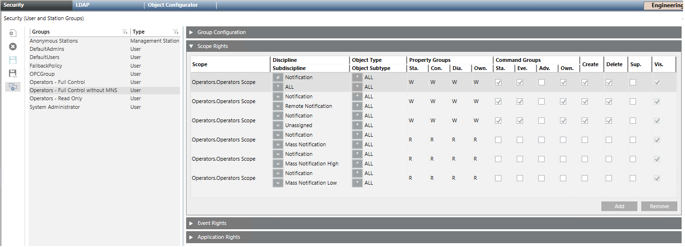

Creating a Security Group to Remove Mass Notification Control
You want to create a security group that prevents fire operators from accessing the mass notification control commands in management stations.
- System Manager is in Engineering mode.
- A security group exists for fire operators with full control.
- In System Browser, select Management View.
- Select Project > System Settings > Security.
- Select the Security tab.
- In the Groups list, select the [Fire Operators] group.
- Click Save As
 .
. - The New Group dialog box displays.
- Enter the Group name, for example
Operators without MNS control. - Click OK.
- The new group is automatically selected in the group list.
- Open the Scope Rights expander.
- Configure the scope rights as illustrated in the picture below. You have to create 6 entries with the following scopes:
- Discipline ≠ Notification, Subdiscipline = All: write and command rights
- Discipline = Notification, Subdiscipline = Remote Notification: write and command rights
- Discipline = Notification, Subdiscipline = Unassigned: write and command rights
- Discipline = Notification, Subdiscipline = Mass Notification: read-only and no command rights
- Discipline = Notification, Subdiscipline = Mass Notification High: read-only and no command rights
- Discipline = Notification, Subdiscipline = Mass Notification Low: read-only and no command rights
NOTE: See the image below for details on property and command settings.
The Command Groups Adv. should not be enabled for fire operators, see Disabling Advanced Commands for Fire Operators. - Click Save
 .
.
- The new security group is available and you can assign users to it.
For more information about security groups, see the User Administration section.
